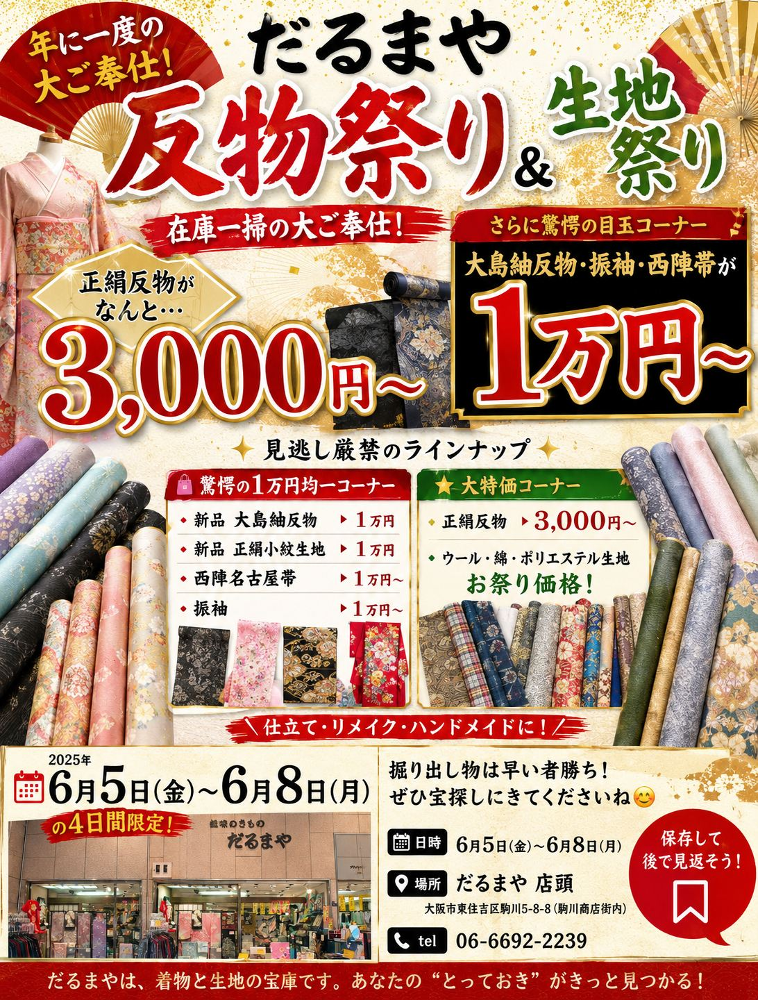

在庫一掃の大ご奉仕！正絹反物がなんと【3,000円から】！
普段なかなか手が出ない逸品反物や、手芸・ハンドメイド用の生地が「お祭り価格」で大集合✨
驚愕の1万円均一コーナー ＆ 掘り出し物は完全早い者勝ち！
年に一度の特別大売出しをだるまや店頭にて開催いたします
いつも「だるまや呉服店」をご愛顧いただき、誠にありがとうございます。
この度、日頃の感謝を込めまして、だるまや店頭にて大ご奉仕の「反物祭り」＆「生地祭り」を同時開催いたします！
本格的なお着物のお仕立て用にはもちろん、贅沢な「着物リメイク」や「ハンドメイド手芸」の素材としても大活躍する逸品反物や上質な生地が勢揃い。
「良いものを、驚きの価格で手に入れる」絶好の4日間です。掘り出し物はすべて早い者勝ちですので、ぜひ店頭でお手にとって、あなただけの宝探しをお楽しみください！
正絹（絹100%）ならではの上品な光沢と心地よい肌触り。在庫一掃ならではの衝撃価格3,000円から大放出！本格的なお仕立てはもちろん、贅沢なお洋服へのリメイクやクラフト用にも最適な高級反物を多数揃えました。
インポートの高級ウールから、人気の綿・ポリエステルなどの定番素材まで、ハンドメイドや手芸・ソーイングにぴったりの手作り用生地がお祭り特価！オリジナルバッグ、小物、お洒落な服作りに大活躍の生地が勢揃いします。
西陣袋帯や名古屋帯、さらには憧れの「新品大島紬反物」まで、今回の超目玉企画である「1万円均一コーナー」に特別出品！普段の呉服店では絶対にあり得ない、衝撃のポッキリ価格の掘り出し物は完全早い者勝ちです。
普段では絶対にあり得ない、新品反物・高級帯がまさかの1万円ポッキリ！
皆様の着物ライフやハンドメイド活動を応援するために、今回の目玉として「1万円均一（税込11,000円）コーナー」を特別に設置いたしました。
普段はなかなか手が出せない西陣高級帯や新品の大島紬反物まで、このお祭り期間中だけすべてポッキリ価格で大放出。お早めのご来店をおすすめいたします。
まさかの大島紬が1万円から！極上の泥染めや美しい絣織りの逸品を大放出。
驚きの正絹小紋が1万円から。普段使いやお洒落着にぴったりの華やかな染めと織り。
セミフォーマルに大活躍の正絹附下反物も、破格の1万円からご提供いたします。
コーディネートを引き締める、上品な西陣織の袋帯や名古屋帯がなんと1万円から！
皆様のお越しを、だるまや店頭にて心よりお待ちしております
| 📅 開催日時 |
2026年6月5日(金) 〜 6月8日(月) 営業時間：10:00 〜 18:30 （4日間限定開催） |
|---|---|
| 📍 開催場所 |
だるまや店頭 〒546-0043 大阪府大阪市東住吉区駒川5-8-8 （駒川商店街内 みなみ通り商店会） |
| 🚃 アクセス |
近鉄南大阪線「針中野駅」より徒歩2分 大阪メトロ谷町線「駒川中野駅」より徒歩5分 |
| 📞 お問い合わせ | 06-6692-2239 （だるまや呉服店） |
お気に入りのお色・柄は、出会ったその瞬間がチャンスです。
ぜひ「だるまや」へお気に入りの宝探しに来てくださいね！